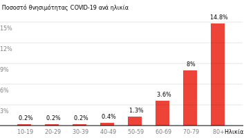

Εξομαλυνοντας την Καμπυλη
Ο COVID-19 είναι επισήμως παγκόσμια πανδημία, ας πληροφορηθούμε και ας δράσουμε από κοινού.
Τελευταία ενημέρωση Mar 26, 2020 4:45 PM (UTC)
Προετοιμασμένοι όχι πανικόβλητοι
Ανταποκρινόμενοι στην εκθετική αύξηση του COVID-19 με πρόληψη και με αμοιβαία υποστήριξη.
Επιβεβαιωμένη Συλλογική Πληροφόρηση
Ιατρικώς επιβεβαιωμένες πληροφορίες με εύκολα κατανοητές περιλήψεις, γραμμένες από άτομα σαν και σένα, και γιατρούς.
Παγκόσμια, χωρίς αποκλεισμούς, σε πραγματικό χρόνο
Συχνές ενημερώσεις με επίκαιρες πληροφορίες, και ανοιχτές πηγές σε όσο το δυνατόν περισσότερες γλώσσες.
Μεμονωμένα είναι δύσκολο να συμβαδίζεις με τα νέα, και να ξεχωρίσεις ποια είναι αληθινά. Διάβασε, συνεισέφερε και μοιράσου τεκμηριωμένες πληροφορίες εδώ για να μας βοηθήσεις όλους.
>> Γραφτείτε για να λάβετε ενημερώσεις από την ομάδα επιστημόνων του FlattenTheCurve.com <<
Δωρεάν εγγραφή, χωρίς SPAM ή χρήση marketing
Ναι, τα πράγματα είναι άσχημα
Δε χρειάζεται πανικός, αλλά ούτε και να αγνοείς τις προειδοποιήσεις για τη δημόσια υγεία σχετικά με τον κορωνοϊό. Οι γνώμες συγκλίνουν πως ο περιορισμός, ίσως ήταν εφικτός πριν μερικές εβδομάδες, δεν είναι πλέον ρεαλιστικός. Η Κίνα μας αγόρασε χρόνο, αλλά τον σπαταλήσαμε. Μπαίνουμε στη φάση της πανδημίας που θα ακολουθήσουν εποχιακές επανεμφανίσεις της νόσου εκτός και αν βρούμε ένα εμβόλιο (κάτι που ίσως είναι ακόμα 18-24 μήνες μακριά, αν είμαστε τυχεροί).
Δεν πρόκειται για μια φυσιολογική γρίπη
Ούτε στο ευνοϊκότερο σενάριο
Η εκτίμηση της Παγκόσμιας Οργάνωσης Υγείας για ποσοστό θνησιμότητας 3,5% είναι μέσος όρος μεταξύ ηλικιακών ομάδων, ενώ έχει προσφέρει μεγάλης κλίμακας δεδομένα παρατήρησης που αποδεικνύουν την ύπαρξη υψηλού αριθμού ασυμπτωματικών κρουσμάτων. Υπάρχει πολύ ισχυρή συναίνεση ότι τα άτομα ηλικίας 60 ετών και άνω και τα άτομα με υποκείμενες παθήσεις επηρεάζονται περισσότερο.

Νωρίτερα στην επιδημία, υπήρχε ελπίδα ότι το 3,5 τοις εκατό ήταν αρκετά υπερεκτιμημένο, ωστόσο, καθώς νέα στοιχεία συνεχίζουν να εμφανίζονται, υπάρχει όλο και μικρότερη ελπίδα για αυτό το ενδεχόμενο. Οι αριθμοί από τη Νότια Κορέα είναι μέχρι στιγμής οι πιο αισιόδοξοι στον κόσμο (0,7% θανατηφόρα περιστατικά) αλλά, α) ο πληθυσμός της Νότιας Κορέας είναι νεότερος κατά μέσο όρο και β) η Νότια Κορέα (σε αντίθεση με τις ΗΠΑ) έχει κάνει τα πάντα σωστά από τα πρώτα στάδια της επιδημίας: έχει κάνει μαζική εφαρμογή διαγνωστικών ελέγχων σε συνδυασμό με ριζική διαφάνεια, δημόσια υποστήριξη και ακόμα και ελέγχους drive-through! Εάν αυτό το στέλεχος του Κοροναϊού είναι σαν άλλους ιούς, τα επιθετικά μέτρα μείωσης της μετάδοσης μπορούν να μειώσουν και τη μέση «δόση» ιικών σωματιδίων που επάγουν τη νόσο; αυτό μπορεί να μειώσει τη μέση σοβαρότητα της νόσου καθώς και τα συνολικά ποσοστά θνησιμότητας. Ο χρόνος θα δείξει.
Επιπλέον, ακόμα και αν το πραγματικό ποσοστό θνησιμότητας του Covid-19 είναι τόσο χαμηλό όσο 1% (όπως είναι μέχρι στιγμής με το Diamond Princess), θα είναι ήδη δέκα φορές υψηλότερο από μια τυπική εποχική γρίπη.
Οι 61.099 θάνατοι που σχετίζονται με τη γρίπη στις ΗΠΑ κατά τη διάρκεια της βαριάς περιόδου γρίπης 2017-2018 ανήλθαν στο 0,14% των εκτιμώμενων 44,8 εκατομμυρίων κρουσμάτων με συμπτώματα γρίπης. Υπήρξαν επίσης κατ’ εκτίμηση 808.129 νοσηλείες σχετιζόμενες με γρίπη, δηλαδή το 1.8%. Εάν υποθέσουμε ότι συμβαίνει ένα ξέσπασμα Covid-19 παρόμοιου μεγέθους στις ΗΠΑ, και πολλαπλασιάσεις τις εκτιμήσεις θανάτου και νοσηλείας επί πέντε ή 10, τότε παίρνεις πραγματικά τρομακτικούς αριθμούς: 300.000 έως 600.000 θάνατοι, και 4 εκατομμύρια έως 8 εκατομμύρια νοσηλείες σε μια χώρα που έχει 924.107 στελεχωμένα νοσοκομειακά κρεβάτια [για όλες τις ασθένειες συνολικά].
Για τον περισσότερο κόσμο, η λοίμωξη οδηγεί σε ήπιας μορφή ασθένεια αλλά εξακολουθεί να μπορεί να μεταδοθεί, έτσι εξαπλώνεται ο ιός. Αυτοί που θα νοσήσουν βαριά, θα χτυπηθούν σκληρά. Η θνησιμότητα δεν είναι η πλήρης εικόνα: η Ιταλία αναφέρει ότι το 10% των περιπτώσεων δε χρειάζεται μόνο νοσηλεία, αλλά και παραμονή στη ΜΕΘ – φροντίδα που χρειάζεται για περίοδο 3-6 εβδομάδων. Αυτό δεν είναι βιώσιμο.
Επικεντρώσου στο κυρίως θέμα
Πολύ μελάνι έχει χυθεί σε εικασίες σχετικά με το “αληθινό” ποσοστό, ωστόσο, είμαστε ακόμα στην πρώιμη φάση της πανδημίας και θα μπορούσε να πάρει χρόνια μέχρι να προσδιοριστεί με ακρίβεια το πραγματικό ποσοστό. ΑΛΛΑ γνωρίζουμε ότι είναι κάπου μεταξύ 0,5% και 4% θνησιμότητας· αυτό το εύρος δίνει επαρκή στοιχεία για αποφασιστική, άμεση και ευρείας κλίμακας προληπτική δράση. Το πιο σημαντικό πράγμα που πρέπει να γίνει είναι να εξομαλύνουμε την καμπύλη της επιδημίας έτσι ώστε τα συστήματα υγείας μας να μπορούν να αντεπεξέλθουν και να δώσουν χρόνο στους επιστήμονες να ερευνήσουν εμβόλια και θεραπείες.

Είναι ήδη εδώ
Θεώρησε ότι ο ιός είναι ήδη στην πόλη σου / χωριό / χώρο εργασίας / εκκλησία / κλπ. Είναι σχεδόν σίγουρα ήδη “εδώ” και απλά δεν έχει εντοπιστεί λόγω έλλειψης διαγνωστικών ελέγχων. Στις ΗΠΑ, υπάρχουν 6 πολιτείες που εξακολουθούν να μην έχουν ούτε ένα εργαστήριο έτοιμο να πραγματοποιήσει ελέγχους ακόμη και αν είχαν ένα δείγμα στα χέρια τους. Οι εκτιμήσεις από την Ιταλία είναι πως στην αρχή του ξεσπάσματος, ο αριθμός των πραγματικών λοιμώξεων ήταν τετραπλάσιος από τον αριθμό των κρουσμάτων που μπορούσαν να επιβεβαιωθούν. Μη-εμφανής μετάδοση στην κοινότητα συνέβαινε για εβδομάδες πριν εντοπιστεί στο Seattle. Το Seattle και το Stanford κάνουν καταπληκτική δουλειά προσπαθώντας να αναπτύξουν τα δικά τους διαγνωστικά τεστ· περίπου 5-7% των τεστ στο Seattle είναι θετικά και οποιοσδήποτε μπορεί να ελεγχθεί (με ένδειξη ιατρού).
Απογοητευμένο από την έλλειψη διαγνωστικών ελέγχων λόγω προβλημάτων με το τεστ που ανέπτυξε το CDC, το Seattle Flu Study άρχισε να χρησιμοποιεί ένα τεστ ανεπτυγμένο εσωτερικά από το ίδιο για έλεγχο Covid-19 σε δείγματα ανθρώπων που είχαν βρεθεί αρνητικοί για γρίπη. Αυτή η τεχνική -επιτρεπτή ως ερευνητικό πρωτόκολλο- αποκάλυψε τον έφηβο του νομού Snohomish που διαγνώστηκε θετικός.
(Για λόγους δημόσιας υγείας, το Πανεπιστήμιο της Ουάσιγκτον δημοσιεύει αυτά τα αποτελέσματα). Μέχρι στιγμής μόνο το Πανεπιστήμιο της Ουάσιγκτον και το Stanford έχουν προχωρήσει με δικά τους διαγνωστικά κιτ (όχι του CDC)· και τα δύο ιδρύματα έχουν δώσει εντολή να αντικατασταθούν οι τάξεις σε εναλλακτικές λύσεις μάθησης εξ αποστάσεως Οι ενέργειες αυτές μιλάνε από μόνες τους, περισσότερα πανεπιστήμια θα πρέπει να ακολουθήσουν το παράδειγμά τους. Βέβαια, οι καθηγητές χρειάζονται την τεχνολογία και την απαραίτητη υποστήριξη για να κάνουν την αλλαγή.
Εκπαιδευτικές κοινότητες με λίγους πόρους (χωρίς φορητούς υπολογιστές ή internet) θα δυσκολευτούν περισσότερο να εφαρμόσουν μια τέτοια αλλαγή. Αλλά ας ξεκινήσουμε με εκείνα τα πανεπιστήμια (και τα αντικείμενα σπουδών) για τα οποία κάτι τέτοιο δε φέρει σημαντικές δυσκολίες. Δεν υπάρχει μία παρέμβαση που να ταιριάζει σε όλους, αλλά η γρήγορη ανταπόκριση είναι καίρια. Προς τους καθηγητές: παρακαλώ μην περιμένετε την πανεπιστημιακή διοίκηση να εφαρμόσει την απόφαση σε όλη το ίδρυμα. Μετακινηθείτε σε λύσεις εξ αποστάσεως με δική σας πρωτοβουλία. Διαβάστε εδώ για γρήγορες συμβουλές on-line διδασκαλίας.
Σύστημα υγείας
Το αμερικανικό σύστημα υγείας δεν είναι καλά προετοιμασμένο. Κανείς δεν είναι
Στις ΗΠΑ, η δυνατότητα υγειονομικής περίθαλψης είναι κάτω από 1 εκατομμύριο επανδρωμένα κρεβάτια. Αυτό δεν είναι αρκετό για να φιλοξενήσει τον αριθμό νοσηλείας που αναμένεται να δούμε (4-8 εκατομμύρια). Το Πανεπιστήμιο Johns Hopkins πραγματοποίησε τριετή παγκόσμια έρευνα για την ετοιμότητα σε περίπτωση πανδημίας. Αν και οι ΗΠΑ κατατάχθηκαν στην κορυφή των χωρών, πέτυχαν σκορ μόνο 42 στα 100. Πολύ απλά δε διαθέτουμε τον απαραίτητο εξοπλισμό, εκπαίδευση και επικοινωνιακή δυνατότητα που χρειάζεται και πρέπει να τα αναβαθμίσουμε γρήγορα. Κανείς δεν τα διαθέτει. Αυτός είναι ο λόγος για τον οποίο οι επιλογές σου σήμερα έχουν τόσο μεγάλη σημασία.
Και όσοι από εμάς έχουν Ιταλούς συναδέλφους στο βορρά (που έχει πληγεί περισσότερο) γνωρίζουν ότι η χώρα διαθέτει εξαιρετικούς γιατρούς και ανοσολόγους. Και αποτελεσματική καθολική φροντίδα. Αυτή δεν είναι μια ιστορία κράτους αναπτυσσόμενου κόσμου χωρίς σημασία για τις ΗΠΑ.
Πολιτικές αντιμετώπισης
Όπως και σε άλλες χώρες, ο συνδυασμός πολιτικών εργασίας και δημόσιας υγείας στις ΗΠΑ αποτελεί εκρηκτικό συνδυασμό σε καιρό πανδημίας
- Μηδενική καθολικά εγγυημένη αναρρωτική άδεια μετ’ αποδοχών
- Ακόμη και αυτοί που *δικαιούνται* πληρωμένη αναρρωτική άδεια, το διάστημα που καλύπτεται είναι συχνά μερικές ημέρες, και όχι εβδομάδες που θα χρειαζόταν μια παρατεταμένη ασθένεια.
- Μηδενική εγγυημένη άδεια με αποδοχές για φροντίδα μελών της οικογένειας που νοσούν
- Μηδενική εγγυημένη υποστήριξη, οικονομικά ή λειτουργικά για άτομα που πρέπει να βάλουν τον εαυτό τους σε καραντίνα. Επομένως κάποιοι άνθρωποι αγνοούν τις οδηγίες για καραντίνα επειδή πρέπει να βάλουν ψωμί στο τραπέζι τους
- Πολλοί άνθρωποι είναι ανασφάλιστοι. Δεδομένου της κατάστασης τώρα (μη-εμφανής μετάδοση και απουσία διαθέσιμου εμβολίου), οι ασφαλιστικές εταιρείες έχουν ηθική υποχρέωση αλλά δεν έχουν οικονομικά κίνητρα να βελτιώσουν τους διαγνωστικούς ελέγχους και να εξασφαλίσουν πρόσβαση στην περίθαλψη.
- Στις ΗΠΑ η ασφάλιση συνδέεται με την απασχόλησή, έτσι όταν οι άνθρωποι αρρωσταίνουν είναι επίσης ευάλωτοι στην πτώχευση. Σε μια χρονιά πανδημίας αυτό είναι καταστροφικό για μια οικονομία.
Το γεγονός ότι τέτοια δίχτυα ασφαλείας δεν έχουν υπάρξει στο παρελθόν στις ΗΠΑ περιπλέκει τις συμπεριφορές που απαιτούνται για την εξομάλυνση της καμπύλης σε σύγκριση με τις περισσότερες άλλες χώρες που έχουν πληγεί μέχρι στιγμής. Ωστόσο, νομοθεσία που πέρασε πριν μερικές Παρασκευές από τη Βουλή των Αντιπροσώπων των ΗΠΑ αποσκοπεί στην αντιμετώπιση ορισμένων από αυτά τα κρίσιμα ζητήματα. Εν ολίγοις, το νομοσχέδιο θα παρέχει ενισχυμένες παροχές ανεργίας, δωρεάν δοκιμές του ιού, καθώς και επιπρόσθετα κεφάλαια για την επισιτιστική βοήθεια και το Medicaid. Την ψήφιση του νομοσχεδίου κάλυψαν οι New York Times, το CNN καθώς και άλλοι οργανισμοί ειδήσεων. Ολόκληρο το κείμενο του νομοσχεδίου είναι διαθέσιμο εδώ.
Παγκόσμια παρακολούθηση του ιού και επικοινωνία
Οι γιατροί σε όλο τον κόσμο σφυροκοπούνται ανελέητα στην πρώτη γραμμή αυτής της κρίσης. Η έλλειψη προστατευτικού εξοπλισμού τους αφήνει εκτεθειμένους στον κίνδυνο, και ούτε οι ίδιοι είναι σε θέση να λάβουν την περίθαλψη που χρειάζονται. Για μια πιο προσωπική προοπτική της διάστασης της πανδημίας, ρίξτε μια ματιά εδώ, το συγκεκριμένο περιστατικό είναι μόνο ένα από πολλά που έρχονται με καταιγιστικούς ρυθμούς.
Σε παγκόσμιο επίπεδο, ο απολυταρχισμός μπορεί να περιορίσει τον έλεγχο της πανδημίας, δεδομένου ότι μπορεί να περιορίσει την εμπειρία και τη διαφάνεια που είναι απαραίτητη για την ορθή λήψη αποφάσεων, την καλύτερη δυνατή χρήση των πόρων και την ανταλλαγή πληροφοριών για την κατάσταση των πολιτών σε τοπικό αλλά και σε παγκόσμιο επίπεδο. Παραδείγματα αυτού του φαινομένου έχουν παρατηρηθεί στην Κίνα (στα πρώιμα στάδια της επιδημίας), και στο Ιράν, την Τουρκία και τη Ρωσία, οι οποίες μέχρι πρόσφατα είχαν αναφέρει το στατιστικά μη ρεαλιστικό σενάριο των μηδενικών κρουσμάτων. Οι σελίδες της Πρεσβείας των ΗΠΑ αναφέρουν πλέον περιπτώσεις, για παράδειγμα η Ρωσική Πρεσβεία. Μια σειρά από επιτυχημένες απεικονίσεις δεδομένων και παγκόσμια παρακολούθηση των κρουσμάτων είναι πλέον διαθέσιμες, για παράδειγμα από το Johns Hopkins Coronavirus Resource Center και από τους New York Times Coronavirus Case Maps
Υπάρχει ελπίδα.
Υπάρχει ελπίδα. Είναι στο χέρι σου. Ορίστε η δουλειά
Μπορείς να βοηθήσεις, ακολουθώντας όσο το δυνατόν περισσότερο τις ακόλουθες οδηγίες. Όσο νωρίτερα και όσες περισσότερες προφυλάξεις παρθούν, τόσες περισσότερες ζωές θα σωθούν. Είναι τόσο απλό. Αυτοί που αντέδρασαν υποτονικά χτες, θα αντιδράσουν υπερβολικά σήμερα. Αντιστάσου στην παρόρμηση να αντιδράσεις δυσανάλογα ή να χάσεις την ελπίδα. Το κλειδί είναι ψύχραιμη, σταθερή, και επίμονη πρόοδο στο έργο ελέγχου της εξάπλωσης, και παρότρυνση των άλλων να κάνουν το ίδιο.
Από μια καλή μου φίλη στο Πεκίνο “Μείνετε μακριά από τον φόβο και την υστερία που μπορεί να χτυπήσει τις πόλεις σας. Χρησιμοποιήστε σοφία, αλλά μην την αφήσετε να γίνει φτηνή δικαιολογία για να μην αγαπάτε τους συνανθρώπους σας. Διαλέξτε γενναιοδωρία αντί για συσσώρευση αγαθών. Και στις πραγματικά δύσκολες μέρες (ή ίσως μετά από υπερέκθεση στα κοινά δημοσιεύματα) δυναμώστε τη μουσική και χορέψτε! Γιορτάστε την καλοσύνη! Είναι εκεί, θα παραμείνει και μπορεί να αποτελέσεις τον καταλύτη για αυτή!”
Σχετικά με τους συγγραφείς
Περισσότερες πληροφορίες για τους συγγραφείς εδώ
Συνεργασίες
Θα θέλαμε να επισημάνουμε πως δε μιλάμε εκ μέρους κάποιου οργανισμού
Κάνουμε ότι καλύτερο μπορούμε αντλώντας πληροφορίες μόνο από έμπιστες πηγές και να κρατάμε το site ενημερωμένο. Ενημερώστε μας αν υπάρχουν προβλήματα με την εγκυρότητα του περιεχομένου. Αν είσαι ιολόγος/επιστήμονας δημόσιας υγείας κτλ, και θέλεις να συνεισφέρεις, παρακαλώ πήγαινε εδώ.
Ποιον να ακολουθήσεις
Ποιον να ακολουθήσεις αν ενδιαφέρεσαι για την επιστήμη της Επιδημιολογίας
Οι πραγματικοί ήρωες είναι αυτοί στην πρώτη γραμμή και αυτοί που η δουλειά τους αναφέρεται παραπάνω. Αυτοί είναι μερικοί που ακολουθώ για διάφορους λόγους. H αναφορά τους εδώ δε σημαίνει ότι έχουν διαβάσει ή εγκρίνει τις παραπάνω οδηγίες. Μια μη πλήρη λίστα των προφίλ τους στο twitter είναι διαθέσιμη. Ακολουθώ και αρκετούς άλλους ανθρώπους που δε σχετίζονται με την έξαρση αλλά μπορείτε να περιηγηθείτε εδώ: https://twitter.com/figgyjam/following